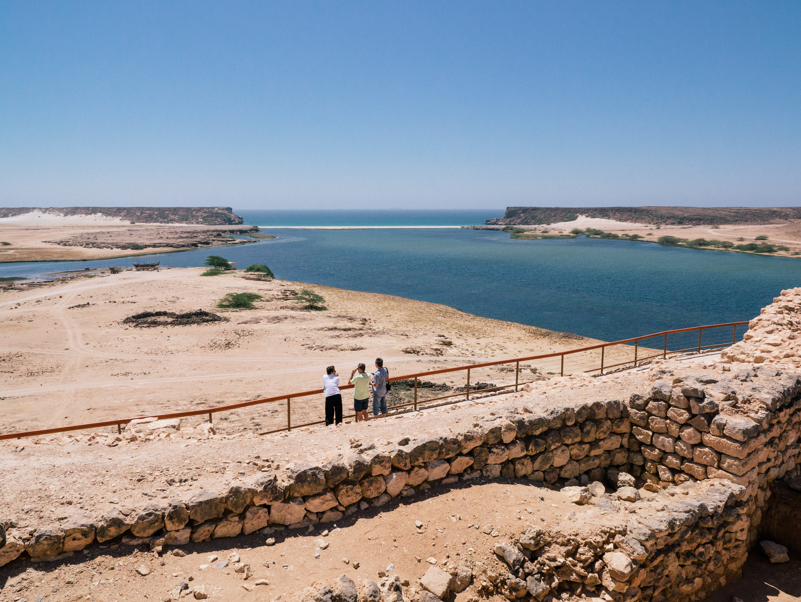

Six décisions encadrent l'accès, le camping et les nuitées pour protéger la faune sauvage
L'Autorité de l'environnement du sultanat d'Oman a pris six décisions encadrant la gestion de réserves naturelles. Elles portent sur l'accès des visiteurs, le camping, les nuitées et les tournages documentaires, et définissent les activités interdites pour protéger la faune sauvage. Publiées au Journal officiel le 25 octobre 2026, elles entrent en vigueur le 26 octobre 2026.
Ces décisions concernent les réserves naturelles de Khor Salalah, d'Al Jabal Al Gharbi, d'Al Dhahirah, les réserves des khors du littoral de Salalah, ainsi que les réserves naturelles de l'oasis d'Al Buraimi et de Ras Al Shajar.

Avant une visite ou un séjour en camping
Les dispositions imposent une autorisation pour entrer dans les réserves concernées, y camper ou y passer la nuit. Dans les réserves d'Al Jabal Al Gharbi, d'Al Dhahirah, de l'oasis d'Al Buraimi et de Ras Al Shajar, les promenades et la randonnée en montagne sont également soumises à autorisation.
La demande doit être adressée à l'Autorité de l'environnement au moyen du formulaire prévu. Le service compétent doit statuer dans les 30 jours suivant le dépôt du dossier complet, d'où l'importance de préparer son voyage et d'accomplir les démarches à l'avance.
Des exemptions précises à l'autorisation d'entrée sont prévues pour les habitants de la réserve et leurs parents au premier degré, les élèves en sortie éducative, les délégations gouvernementales officielles, ainsi que certaines catégories de personnels militaires, de sécurité, gouvernementaux et universitaires accomplissant les tâches définies par les dispositions. Ces exemptions portent uniquement sur l'entrée et ne dispensent pas automatiquement des autorisations nécessaires aux autres activités.
Qu'en est-il des prises de vue ?
Les dispositions imposent une autorisation pour les prises de vue destinées à la réalisation de documentaires ou à la promotion de la réserve. La photographie personnelle n'est pas mentionnée dans cette clause, qui précise les finalités soumises à autorisation.
Les réserves des khors du littoral de Salalah comprennent Khor Rori, où se rencontrent paysage côtier, eaux et habitats naturels. Les deux photographies accompagnant cet article le représentent.
Chasse interdite et respect des itinéraires
Les dispositions interdisent la chasse, l'utilisation d'armes, le dépôt de poisons et la collecte de fossiles, d'objets archéologiques, de pierres ou d'autres éléments présents dans la réserve. Elles interdisent également la circulation des véhicules hors des itinéraires désignés, les dommages aux arbres et aux plantes, la pollution des sources d'eau et l'introduction d'espèces sauvages exotiques ou envahissantes.
D'autres activités nécessitent une autorisation, notamment allumer un feu hors des emplacements prévus, mener des études et des recherches ou prélever des échantillons d'organismes sauvages. L'autorisation d'entrée ne remplace pas celles exigées pour ces activités.
Les décisions prévoient des redevances ainsi que des barèmes d'infractions et d'amendes administratives. Les modalités varient selon la réserve et l'activité. Toute personne préparant une visite ou un séjour en camping doit donc consulter les dispositions propres à la réserve choisie et vérifier les autorisations et les redevances applicables à son voyage.
Source : Journal officiel d'Oman, n° 1671 du 25 octobre 2026 ; décisions de l'Autorité de l'environnement nos 190–195/2026.
Photos : Juozas Šalna / Wikimedia Commons, sous licence CC BY 2.0. · https://creativecommons.org/licenses/by/2.0/